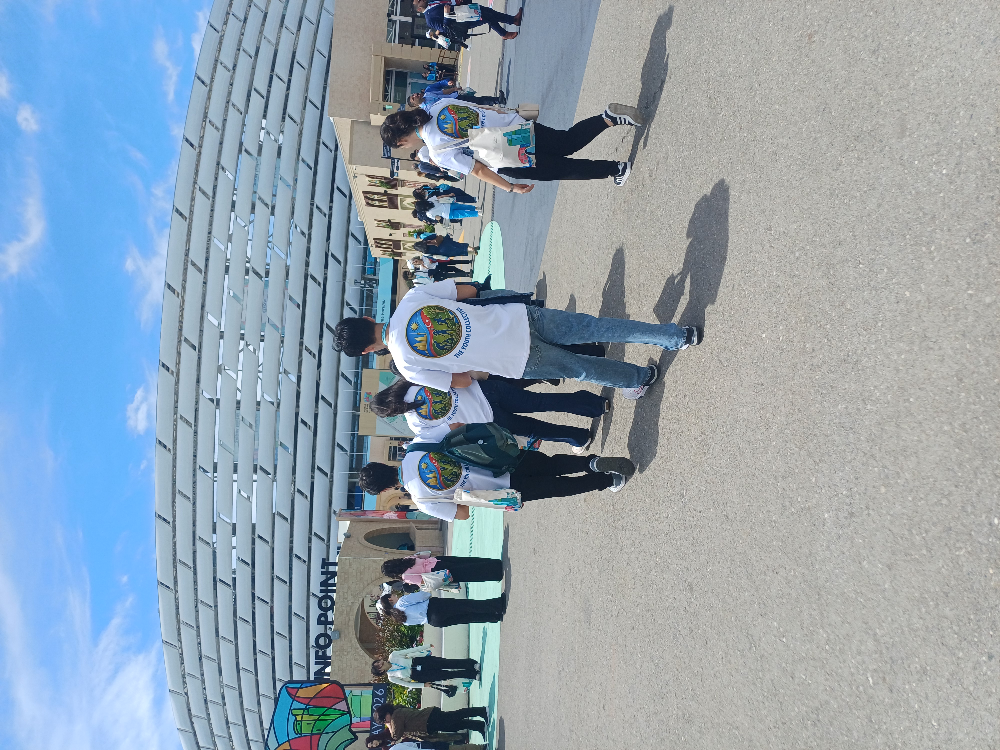
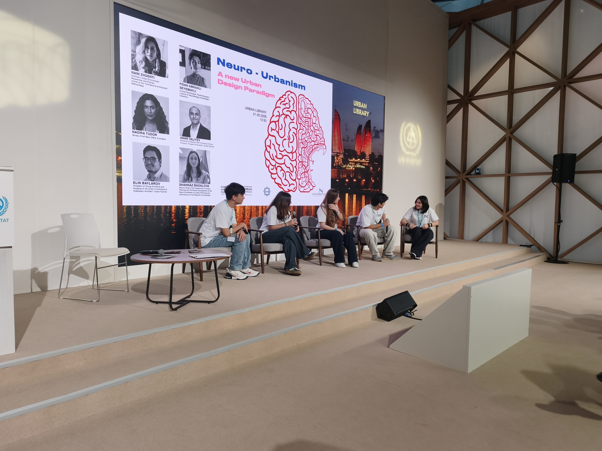

Practice over presentation
Sessions are built around doing: taking things apart, testing, asking questions, trying again. Nobody learns to build by watching slides.
Baku · Youth-led mentorship & learning
Youth Collective is a community where young people learn practical skills from mentors a few steps ahead of them, turn their ideas into real projects, and then help the next group do the same. We call it going from participants to changemakers.

Our mission
Young people shouldn't need a degree, a title, or a perfect plan before they start contributing. We teach practical skills in small, hands-on settings, pair young people with mentors who remember what it felt like to start, and back them when they have an idea worth trying. Whether the work happens at a workbench, on a sports field, or in a park, the aim is the same: young people who are capable, curious, active, and socially responsible.
Sessions are built around doing: taking things apart, testing, asking questions, trying again. Nobody learns to build by watching slides.
Guidance comes from experienced students and professionals, so the next step always looks reachable.
When someone has an idea, we help shape it into a project with a plan, a team, and a first version people can use.
We document what we do and keep a clear line between what we have achieved and what we are still working toward.
Our programs
Each program feeds the others. A workshop sparks an interest, a mentor helps it grow, a project puts it to work, and the community around it keeps people coming back.
Peer-to-peer mentoring, guidance from experienced students and professionals, and support for each person's own development, whatever direction it takes.
In practiceOur members mentor student teams through the engineering workshops →Interactive sessions where participants leave with a skill, not just notes. Technology, entrepreneurship, communication, leadership, and creative problem-solving, taught by doing.
In practicePeople, Patterns & Prototypes: 4 engineering workshops, 65 students, a program led by Youssef El Haroun →Real initiatives that start from a real need. Young people develop ideas, collaborate across skills, and test their work with the community it is meant for.
In practiceReHand Loom, a wearable built by our members for carpet weavers →Activities that build teamwork, participation, and well-being, and connect young people who might never have met in a classroom.
In practiceOur contribution to the Olympic Inclusion Lab →Who we are
Engineering and mentorship are at the heart of what we do. Ecology, sport, health, inclusion and volunteering have always been part of the same mission: developing young people who are capable, curious, active, and socially responsible.
Caring for the places we share teaches young people to take responsibility for them. Our youth-led climate initiative was presented at COP29 and recognised by UNFPA Azerbaijan.
Youth as Catalysts for Climate Action → Inclusive sportSport builds teamwork, confidence, and inclusion, especially for young people who are too often left on the sidelines.
Our contribution to the Olympic Inclusion Lab → Health & well-beingHealth initiatives support the well-being of the people around us, from active lifestyles to the artisans whose craft puts years of strain on their hands.
ReHand Loom, built for carpet weavers → Volunteering & public eventsWe bring young people into public forums and community events, where they listen, contribute, and practise taking part in civic life.
See our events →How it works
This is the model we design every program around. People move through it at their own pace, and not everyone takes every step, but the next step is always there when someone is ready.
Come to a workshop, an event, or a project meeting. No experience needed.
Pick up practical skills hands-on, with a mentor close by to answer the real questions.
Team up on a project that solves something real, and test it with real people.
Coordinate a team, present your work, or take responsibility for a session.
Share what you know with the next group, and the cycle starts again.
Every mentor was once a participant. That's what keeps the community growing.
Impact so far
From our People, Patterns & Prototypes engineering workshops.
See all our impact →Documented recognition
For our contribution to the Olympic Inclusion Lab, Azerbaijan's National Inclusive Sports Innovation Initiative.
Letter of Appreciation · 2024 UNFPA AzerbaijanFor Youth as Catalysts for Climate Action, a youth-led initiative presented at the Children and Youth Pavilion, COP29 Baku.
Letter · ReHand Loom Ministry of Culture of AzerbaijanAppreciation for ReHand Loom, the wearable our members built to support the hands of carpet weavers.
Learning beyond the classroom
Forums and exhibitions become part of the curriculum. Members prepare questions, interview experts, and turn what they hear into briefings and discussion formats for the next workshop.


Youth Collective ran a structured interview program at the Local Companies Exhibition, questioning roughly 10 exhibitors on production, pricing, and local value. The briefing note that followed shaped how we later built discussion prompts for the Baku Youth Ideas Lab.
Explore the Marsol Expo album →

Youth Collective tracked sessions across WUF13, then delivered original youth presentations on digital exclusion to an audience of visiting delegates and residents. The resulting report and debate prompts became the direct template for the discussion format we later used at the Baku Youth Ideas Lab.
See the WUF13 photo story →
.jpg)
Youth Collective interviewed representatives from roughly 8 energy and sustainability organisations, then staged an internal Model-UN-style rebuttal panel to pressure-test their claims. The research brief that followed fed directly into the debate format used at the Baku Youth Ideas Lab.
Explore the Energy Week album →Marsol Expo, Azerbaijan Energy Week, WUF13, and the Baku Youth Ideas Lab, each with a defined role, real people engaged, and a concrete output.
Open the archive →Get involved
Pick what fits. Each option opens our interest form with your choice already selected, and someone from the team will follow up.
Meet people who like learning by doing, and hear about what's coming next.
I'm in → LearnHands-on sessions in technology, entrepreneurship, communication, and leadership.
Save me a seat → LearnTell us what you want to get better at, and we'll look for someone who has been there.
Match me → BuildHave an idea for your school or community? Bring it, and we'll help you shape a first version.
Pitch my idea → MentorStudents and professionals: share your skills with young people who are just starting out.
I can help → TogetherSchools, organizations, and volunteers: host a workshop, support an event, or partner on a project.
Let's talk →Why we exist
We help them build the skills, confidence, and opportunities to create something of their own, and to support the next person who walks in.